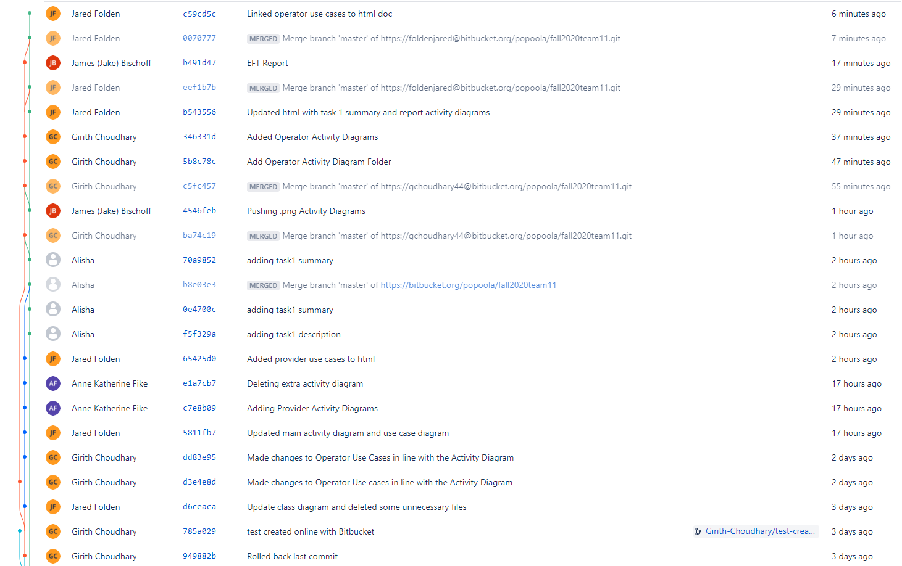
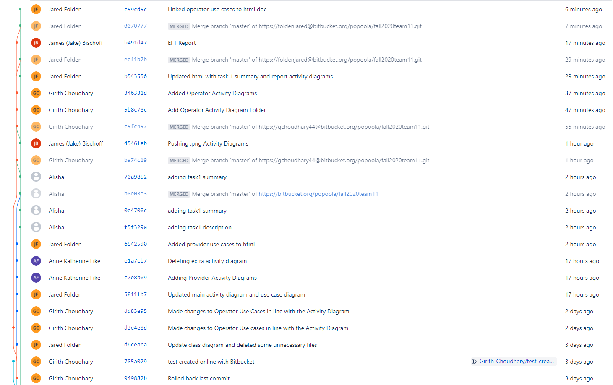

Bitbucket Statistics

| Name | CWID | Hours Spent | |
|---|---|---|---|
| Jake Bischoff | 11971737 | jhbischoff@crimson.ua.edu | 3 |
| Girith Choudhary | 12003936 | gchoudhary@crimson.ua.edu | 3 |
| Anne Katherine Fike | 11926699 | akfike@crimson.ua.edu | 3 |
| Jared Folden (submitter) | 11880129 | jtfolden@crimson.ua.edu | 3 |
| Alisha Kale | 11971713 | aakale1@crimson.ua.edu | 3 |
| Name | Tasks | % of Work |
|---|---|---|
| Jake Bischoff | Created all the Reports sequence diagrams | 20% |
| Girith Choudhary | Created all the sequence diagrams related to "Interactive Mode" | 20% |
| Anne Katherine Fike | 20% | |
| Jared Folden (submitter) | Created the class diagram Managed the html report |
20% |
| Alisha Kale |

| ChocAn [Chocoholics Anonymous] | An organization helping its members overcome their addiction to chocolate |
| EFT [Electronic Funds Transfer] | A transaction where money is transfered through internet from one bank account to another |
| Interactive Mode | The part of the software used by the operators to request certain operations |
| Member | An individual who pays a monthly fee to ChocAn to avail its services |
| Operator | A ChocAn representative who manages the database of members and providers |
| Provider | A health care professional who provides services to a ChocAn member |
| Provider Directory | An alphabetically ordered list of service names and corresponding service codes and fees |
| Run main accounting procedure | Weekly tasks done to read the week’s files of services provided and print a number of reports |
| Service Code | A unique 6 digit code associated with a service provided by ChocAn |

Use case: Write Weekly Reports
Context: This use case does the main accounting procedures and sends out reports to various entities.
Actors: Clock
Main sucess scenario:
1. The week’s record of services are used to create a report for each member who has used ChocAn services that week, includes Write Member Reports.
2. The week’s record of services are used to create a report for each provider who has provided ChocAn services that week, includes Write Provider Reports.
3. The week’s record of services are used to create a report for the manager, includes Write Manager Reports.
4. All of the reports are sent out as email attachments.
5. A record of electronic funds transfer is written to the disk.
Extensions:
4a. If error occurs in any of the reports, return error message and recompile reports
Use case: Member Reports
Context: This use case provides reports for each member who used ChocAn services that week.
Actors: Clock, Manager
Main sucess scenario:
1. The software will search through each service starting with the beginning of the week and groups all of the services provided to each member in an individual report which includes the following information:
a. Member name (25 characters)
b. Member number (9 digits)
c. Member street address (25 characters)
d. Member city (14 characters)
e. Member state (2 letters)
f. Member ZIP code (5 digits)
g. Date of service (MM–DD–YYYY)
h. Provider name (25 characters)
Service name (20 characters)
2. A report will then be compiled and returned.
Extensions:
1a. If no records are found, return an error message.
Use case: Provider Reports
Context: This use case provides reports for each provider who provided ChocAn services that week.
Actors: Clock, Manager
Main sucess scenario:
1. The software will search through each service starting with the beginning of the week and groups all of the services provided by each provider in an individual report which includes the following information:
a. Provider name (25 characters)
b. Provider number (9 digits)
c. Provider street address (25 characters)
d. Provider city (14 characters)
e. Provider state (2 letters)
f. Provider ZIP code (5 digits)
g. Date of service (MM–DD–YYYY)
h. Date and time data were received by the computer (MM–DD–YYYY HH:MM:SS)
i. Member name (25 characters)
j. Member number (9 digits)
k. Service code (6 digits)
l. Fee to be paid (up to $999.99)
m. Total number of consultations with members (3 digits)
n. Total fee for week (up to $99,999.99)
2. A report will then be compiled and returned.
Extensions:
1a. If no records are found, return an error message.
Use case: Summary Reports
Context: This use case provides reports for the manager to see what each provider is owed.
Actors: Clock, Manager
Main sucess scenario:
1. The software will search through each service provided that week and total the amount owed to each provider and the number of consultations they had.
2. The software will calculate the total fee, consultations, and providers for that week.
3. All of this information is printed to a file.
Extensions:
1a. If no services are found, return an error message.
Use case: EFT Reports
Context: The EFT report is a record of all of the Electronic Funds Transfers for the providers. It relays each transaction that is owed to a provider and sends this information to a banking system that ensures they are paid.
Actors: Clock, Manager
Main sucess scenario:
1. Manager indicates a request for the report, or the weekly report is run on its own.
2. The software searches for each instance a Provider performed a service for a member.
3. The software compiles all of its findings in a single report and calculates totals.
4. The report is returned to the Manager and written to a disk to be sent to banking software automatically.
Extensions:
2a. If a Provider or service is not found, return an error message
Use case: Request Reports
Context: This is a broad function that writes a specific report indicated by the manager. It achieves the same thing as a weekly report but is requested manually.
Actors: Manager
Main sucess scenario:
1. Manager requests a specific report.
2. The software executes the desired report and returns the results to the manager.
a. Includes member reports
b. Includes provider reports
c. Includes manager reports
d. Includes EFT reports
Extensions: None
Use case: Bill ChocAn
Context: The Provider wants to bill ChocAn for the services they provided to a ChocAn member.
Actors: ChocAn Provider
Main sucess scenario:
1. Provider initiates the action and the terminal dials the ChocAn Data Center.
ChocAn Data Center verifies the member number with member card information (nine digit member number encoded on magnetic stripe) (includes Verify ChocAn Member).
2. If valid, Validated appears on the one-line display.
3. A ChocAn Provider passes the member card through the card reader or keys in the member number.
4. If Validated appears in the terminal, the provider keys in the date the service was provided in the format MM-DD-YYYY.
5. Provider then uses the Provider Directory (includes Use Provider Directory) to look up the appropriate six-digit service code corresponding to the service provided.
6. Provider keys in the service code. If correct, the software product displays the name of the service corresponding to the code (up to 20 characters) and asks the provider to verify that this is the service that was provided.
7. The Provider can enter comments about the service provided.
8. The software product now writes a service report (includes Write Service Report) that includes the following fields:
Current date and time (MM-DD-YYYY HH:MM:SS)
Date service was provided (MM-DD-YYYY)
Provider number (9 digits)
Member number (9 digits)
Service code (6 digits)
Comments (100 characters) (optional)
9. The software product next looks up the service fee (includes Look Up Service Fee) to be paid for that service and displays it on the provider’s terminal.
10. For verification purposes, the provider has a form on which to enter the current date and time, the date and service it was provided, member name and number, service code, and fee to be paid.
11. At the end of the week, the provider totals the fees to verify the amount to be paid to that provider by ChocAn for that week.
Extensions:
3a. If invalid, it could be that an invalid number was entered, or the member was suspended because the member has not paid fees for at least a month.
4a. Error messages are printed if nonexistent code is entered.
5a. If invalid date is entered, an error message is displayed.
Use case: Use Provider Directory
Context: ChocAn Provider wants to use Provider Directory to look up service code.
Actors: ChocAn Provider
Main sucess scenario:
1. ChocAn Provider accesses the Provider Directory from the ChocAn Provider Terminal.
2. ChocAn Provider can then complete the action of finding the appropriate service code by looking it up in the Provider Directory (includes Look Up Service Fee).
Extensions:
2a. If no code is found, a message is displayed saying that no results were found.
Use case: Look Up Service Fee
Context: ChocAn Provider initiates the action of looking up the service fee for a service they provided to a ChocAn member.
Actors: ChocAn Provider
Main sucess scenario:
1. After finding the service code for the service the Provider provided to the ChocAn member and completing the writing of the service report, the software product next looks up the service fee to be paid for that service.
2. This fee is displayed on the ChocAn Provider’s terminal.
Extensions: None
Use case: Write Service Report
Context: ChocAn Provider wants to generate a service report detailing the service provided to the ChocAn member.
Actors: ChocAn Provider
Main sucess scenario:
1. Provider keys in the service code. If correct, the software product displays the name of the service corresponding to the code (up to 20 characters) and asks the Provider to verify that this is the service that was provided.
2. The Provider can enter comments about the service provided.
3. The software product now writes a service report that includes the following fields:
Current date and time (MM-DD-YYYY HH:MM:SS)
Date service was provided (MM-DD-YYYY)
Provider number (9 digits)
Member number (9 digits)
Service code (6 digits)
Comments (100 characters) (optional)
4. This report is saved in the system as a file.
Extensions:
1a. Error messages are printed if nonexistent code is entered.
Use case: Request Provider Directory
Context: ChocAn Provider wants to obtain a copy of the Provider Directory.
Actors: ChocAn Provider
Main sucess scenario:
1. At any time, a Provider can request a Provider Directory, an alphabetically ordered list of service names and corresponding service codes and fees.
2. This directory is sent to the Provider as an e-mail attachment.
Extensions: None
Use case: Verify ChocAn Member
Context: ChocAn Provider wishes to verify a ChocAn member.
Actors: ChocAn Provider
Main sucess scenario:
1. Provider initiates the action and the terminal dials the ChocAn Data Center.
2. ChocAn Data Center verifies the member number with member card information (nine digit member number encoded on magnetic stripe).
3. If valid, Validated appears on the one-line display.
Extensions:
3a. If invalid, it could be that an invalid number was entered, or the member was suspended because the member has not paid fees for at least a month.
Use case: Interactive Mode
Context: This use case deals with adding, deleting and updating member and provider records.
Actors: ChocAn Operator
Main sucess scenario:
1. The software at the ChocAn Data Center runs in interactive mode during the day.
2. It allows the operator to add new member records.
3. It allows the operator to delete member records of people who have resigned.
4. It allows the operator to update the existing member records.
5. It allows the operator to add, delete, and update provider records.
Extensions: None
Use case: Add New Members or Providers
Context: The operator intends to add new member or provider records to the system.
Actors: ChocAn Operator
Main success scenario:
1. The operator interacts with the software in Interactive mode.
2. The software prompts the operator to Add, Edit or Delete Member and Provider records.
3. The operator chooses the "Add Member" or the "Add Provider" option.
4. Based on the option selected [Member or Provider], the software prompts the Operator to enter details such as first name, last name, address, zip code, phone number.
5. The Operator enters the necessary details.
6. The software validates the operator's inputs, adds the new record to the database and subsequently sends a confirmation message to the Operator.
Extensions:
6a.1 After validation by software, members details already exist in database.
6a.2 The software in Interactive mode sends the following message "Member/Provider exists in database" and redirects the operator to step 2.
6b.1 The validation of the operator's input fails.
6b.2 The software in Interactive mode sends the following message "Member/Provider details are invalid" and redirects the operator to step 5.
Use case: Add New Members
Context: The operator intends to add new member records to the system.
Actors: ChocAn Operator
Main success scenario:
1. The software prompts the Operator to enter details such as first name, last name, address, zip code, phone number.
2. The Operator enters the necessary details.
3. The software validates the operator's inputs, adds the new record to the database and subsequently sends a confirmation message to the Operator.
Extensions:
3a.1 After validation by software, members details already exist in database.
3a.2 The software in Interactive mode sends the following message "Member exists in database" and redirects the operator to step 2.
3b.1 The validation of the operator's input fails.
3b.2 The software in Interactive mode sends the following message "Member details are invalid" and redirects the operator to step 5.
Use case: Add New Providers
Context: The operator intends to add new provider records to the system.
Actors: ChocAn Operator
Main success scenario:
1. The software prompts the Operator to enter details such as first name, last name, address, zip code, phone number.
2. The Operator enters the necessary details.
3. The software validates the operator's inputs, adds the new record to the database and subsequently sends a confirmation message to the Operator.
Extensions:
3a.1 After validation by software, provider's details already exist in database.
3a.2 The software in Interactive mode sends the following message "Provider exists in database" and redirects the operator to step 2.
3b.1 The validation of the operator's input fails.
3b.2 The software in Interactive mode sends the following message "Provider details are invalid" and redirects the operator to step 5.
Use case: Delete Members
Context: The operator intends to delete existing member records from the system.
Actors: ChocAn Operator
Main success scenario:
1. The software prompts the Operator to enter details such as first name, last name, address, zip code, phone number to fetch the necessary Member records.
2. The Operator enters the necessary details.
3. The software returns the records matching the details.
4. The Operator selects the necessary records and presses the "Delete" option.
5. The system re-confirms the records that are to be deleted and sends the message "Delete Records" with option "Yes" and "No".
6. The Operator selects the option "Yes".
7. The software deletes the records from the database, sends a confirmation message to the Operator and returns to the home page.
Extensions:
3a.1 The software finds no records matching the details entered by the Operator.
3a.2 The software sends the message "No records found" and redirects the user to step 2.
6a.1 The Operator selects the option "No".
6a.2 The software redirects the Operator to step 2.
Use case: Delete Providers
Context: The operator intends to delete existing provider records from the system.
Actors: ChocAn Operator
Main success scenario:
1. The software prompts the Operator to enter details such as first name, last name, address, zip code, phone number to fetch the necessary Member records.
2. The Operator enters the necessary details.
3. The software returns the records matching the details.
4. The Operator selects the necessary records and presses the "Delete" option.
5. The system re-confirms the records that are to be deleted and sends the message "Delete Records" with option "Yes" and "No".
6. The Operator selects the option "Yes".
7. The software deletes the records from the database, sends a confirmation message to the Operator and returns to the home page.
Extensions:
3a.1 The software finds no records matching the details entered by the Operator.
3a.2 The software sends the message "No records found" and redirects the user to step 2.
6a.1 The Operator selects the option "No".
6a.2 The software redirects the Operator to step 2.
Use case: Update Members
Context: The operator intends to update existing member records in the system.
Actors: ChocAn Operator
Main success scenario:
1. The software prompts the Operator to enter details such as first name, last name, address, zip code, phone number to fetch the necessary Member records.
2. The Operator enters the necessary details.
3. The software returns the records matching the details.
4. The Operator selects the necessary records and presses the "Edit" option.
5. The Operator changes the necessary details of the records.
6. The software prompts the Operator to save the changes made to the records.
7. The Operator enters the "Save" option.
8. The software validates the changes made to the record.
9. The software commits the changes made to the records to the database, then sends a confirmation message to the Operator and returns to the home page.
Extensions:
3a.1 The software finds no records matching the details entered by the Operator.
3a.2 The software sends the message "No records found" and redirects the user to step 2.
9a.1 The validation of the operator's input fails.
9a.2 The software sends the message "Details entered are invalid" and redirects the Operator to step 8.
Use case: Update Providers
Context: The operator intends to update existing provider records in the system.
Actors: ChocAn Operator
Main success scenario:
1. The software prompts the Operator to enter details such as first name, last name, address, zip code, phone number to fetch the necessary Member records.
2. The Operator enters the necessary details.
3. The software returns the records matching the details.
4. The Operator selects the necessary records and presses the "Edit" option.
5. The Operator changes the necessary details of the records.
6. The software prompts the Operator to save the changes made to the records.
7. The Operator enters the "Save" option.
8. The software validates the changes made to the record.
9. The software commits the changes made to the records to the database, then sends a confirmation message to the Operator and returns to the home page.
Extensions:
3a.1 The software finds no records matching the details entered by the Operator.
3a.2 The software sends the message "No records found" and redirects the user to step 2.
9a.1 The validation of the operator's input fails.
9a.2 The software sends the message "Details entered are invalid" and redirects the Operator to step 8.
Member verification, verifying service code, writing records to the disk, looking up fee to be paid, printing reports, and emailing reports are all functions of the software that are totally computerized as the software handles them.
The ChocAn Data Center and the provider terminal holds the data for the software.
The hardware includes the card, card reader, the ChocAn Data Centre computer, and the user terminal which helps the operators, providers, and members interact with the system.
The data processing software interacts with the communications software which enables the data entered to be processed and stored for future use which can be used by the billing software to process payments.
The user interacts with the software using a keyboard input and the data is transmitted to a terminal display screen.


.png)
.png)
.png)
.png)


If the design isn’t planned well it could have low cohesion which would result in lack of reuse and harder maintainability. Similarly, if we get high coupling there is more scope for error since variables among classes are highly dependent on each other and the code is harder to reuse. So, we tried to implement high cohesion and a low coupling in our design. Our classes encapsulate attributes and operations that are closely related to each other and to the class itself. We tried to implement informational and functional cohesion making each module have elements directly related to the functionality of that module. We tried implementing data coupling so our parameters could be homogenous data items and won’t depend too much on other modules. Any good design requires high cohesion and low coupling and that is what we tried to implement with our class diagram and modules.